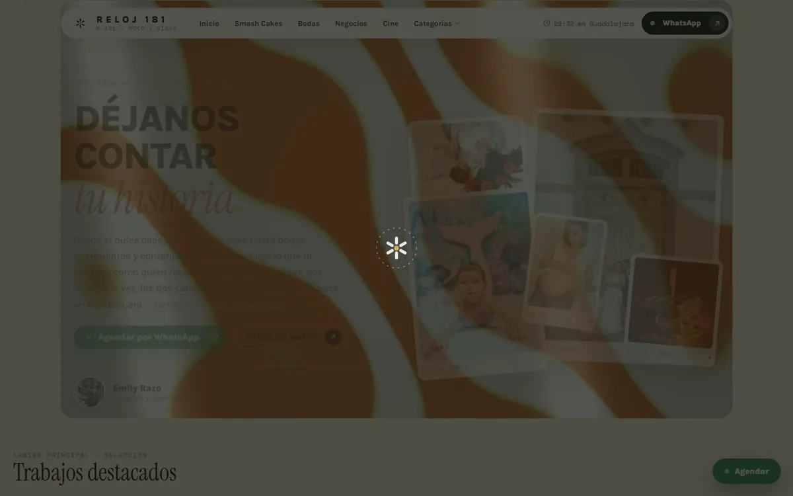

Reloj 181.
Estudio de fotografía y video de Emily Razo. Cifra construyó el sitio: quince páginas generadas desde un solo sistema, animación WebGL escrita a mano, cero plantillas y cero librerías externas. Las fotografías y la marca son de ella.

Sitio webSistema de diseñoSEO localAnimación